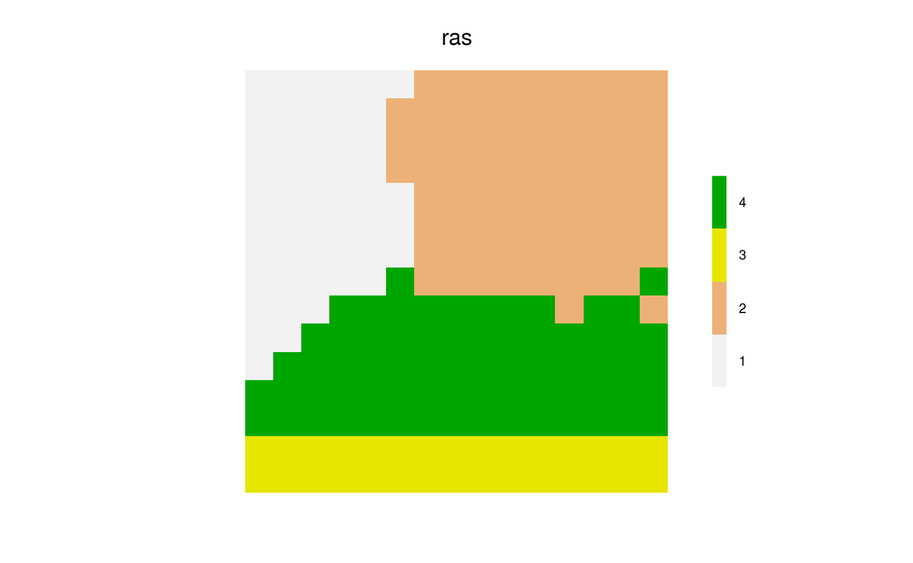
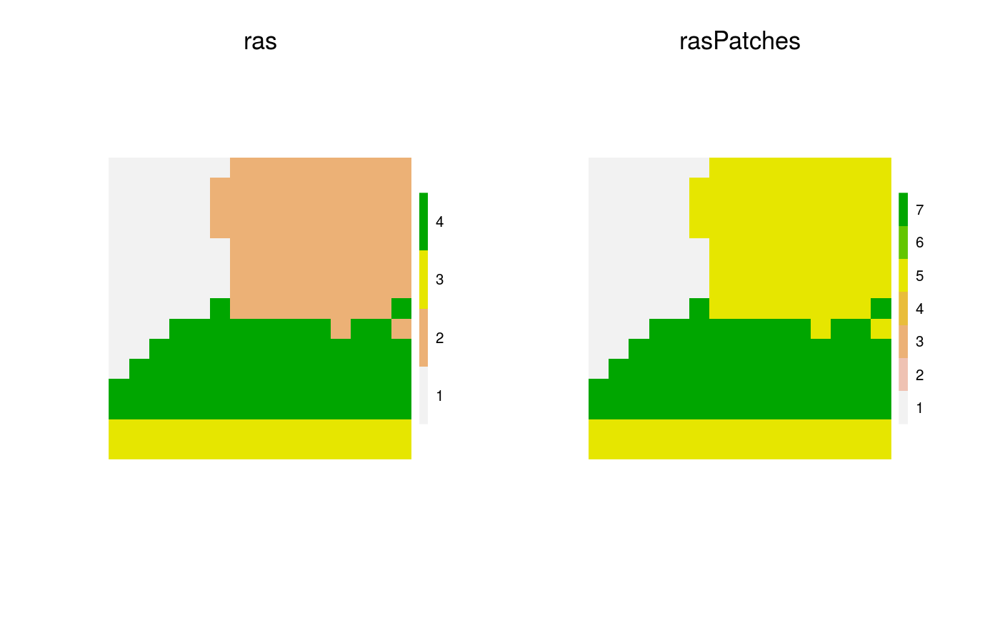
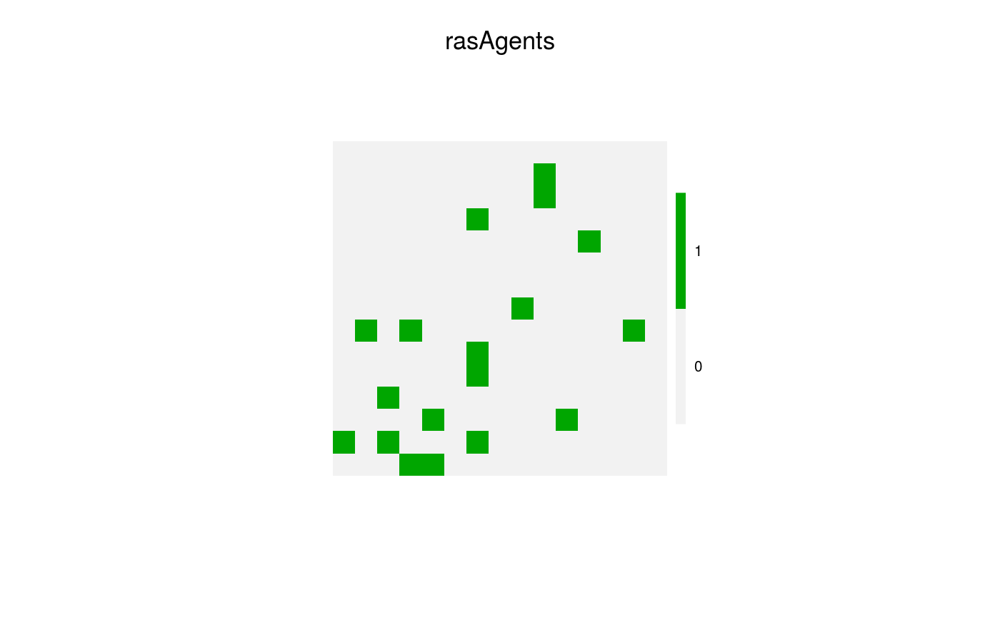

Instantiate a specific number of agents per patch.
The user can either supply a table of how many to initiate in each patch,
linked by a column in that table called pops.
specificNumPerPatch(patches, numPerPatchTable = NULL, numPerPatchMap = NULL)
| patches |
|
|---|---|
| numPerPatchTable | A |
| numPerPatchMap | A |
A raster with 0s and 1s, where the 1s indicate starting locations of agents following the numbers above.
library(data.table) library(raster) library(quickPlot) set.seed(1234) Ntypes <- 4 ras <- randomPolygons(numTypes = Ntypes) if (interactive()) { clearPlot() Plot(ras) }# Use numPerPatchTable patchDT <- data.table(pops = 1:Ntypes, num.in.pop = c(1, 3, 5, 7)) rasAgents <- specificNumPerPatch(ras, patchDT) rasAgents[is.na(rasAgents)] <- 0 library(testthat) expect_true(all(unname(table(ras[rasAgents])) == patchDT$num.in.pop)) # Use numPerPatchMap rasPatches <- ras for (i in 1:Ntypes) { rasPatches[rasPatches==i] <- patchDT$num.in.pop[i] } if (interactive()) { clearPlot() Plot(ras, rasPatches) }rasAgents <- specificNumPerPatch(ras, numPerPatchMap = rasPatches) rasAgents[is.na(rasAgents)] <- 0 if (interactive()) { clearPlot() Plot(rasAgents) }